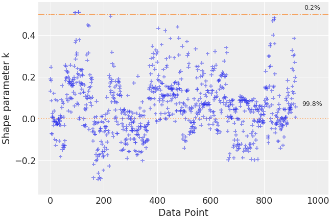
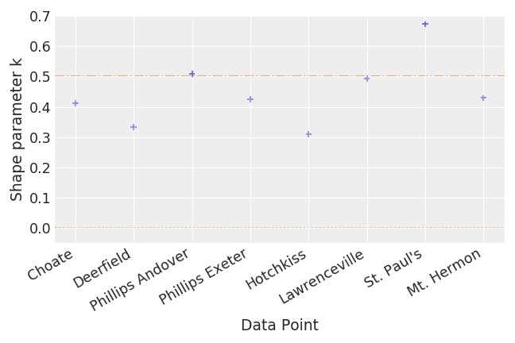
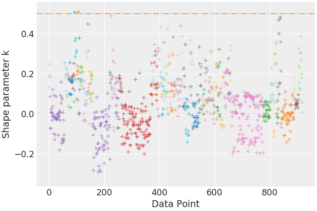
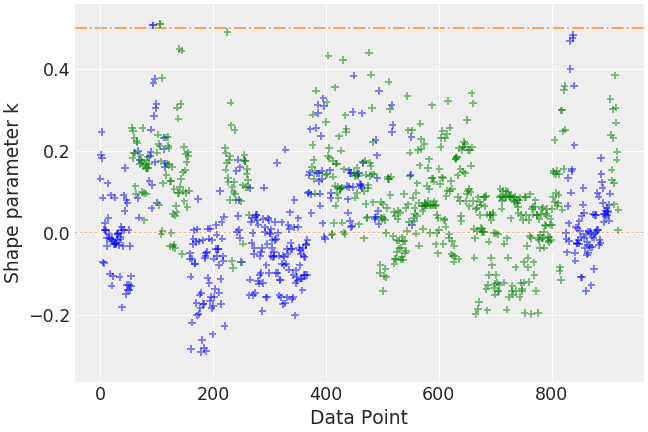

arviz.plot_khat¶
-
arviz.plot_khat(khats, color=None, xlabels=False, show_bins=False, bin_format='{1:.1f}%', annotate=False, hover_label=False, hover_format='{1}', figsize=None, textsize=None, coords=None, legend=False, markersize=None, ax=None, hlines_kwargs=None, backend=None, backend_kwargs=None, show=None, **kwargs)[source]¶ Plot Pareto tail indices.
- Parameters
- khatsELPDData cointaining pareto shapes information or array
Pareto tail indices.
- colorstr or array_like, optional
Colors of the scatter plot, if color is a str all dots will have the same color, if it is the size of the observations, each dot will have the specified color, otherwise, it will be interpreted as a list of the dims to be used for the color code
- xlabelsbool, optional
Use coords as xticklabels
- show_binsbool, optional
Show the number of khats which fall in each bin.
- bin_formatstr, optional
The string is used as formatting guide calling
bin_format.format(count, pct).- annotatebool, optional
Show the labels of k values larger than 1.
- hover_labelbool, optional
Show the datapoint label when hovering over it with the mouse. Requires an interactive backend.
- hover_formatstr, optional
String used to format the hover label via
hover_format.format(idx, coord_label)- figsizetuple, optional
Figure size. If None it will be defined automatically.
- textsize: float, optional
Text size scaling factor for labels, titles and lines. If None it will be autoscaled based on figsize.
- coordsmapping, optional
Coordinates of points to plot. All values are used for computation, but only a a subset can be plotted for convenience.
- legendbool, optional
Include a legend to the plot. Only taken into account when color argument is a dim name.
- markersize: int, optional
markersize for scatter plot. Defaults to None in which case it will be chosen based on autoscaling for figsize.
- ax: axes, optional
Matplotlib axes or bokeh figures.
- hlines_kwargs: dictionary, optional
Additional keywords passed to ax.hlines.
- backend: str, optional
Select plotting backend {“matplotlib”,”bokeh”}. Default “matplotlib”.
- backend_kwargs: bool, optional
These are kwargs specific to the backend being used. For additional documentation check the plotting method of the backend.
- showbool, optional
Call backend show function.
- kwargs :
Additional keywords passed to ax.scatter.
- Returns
- axesmatplotlib axes or bokeh figures
Examples
Plot estimated pareto shape parameters showing how many fall in each category.
>>> import arviz as az >>> radon = az.load_arviz_data("radon") >>> loo_radon = az.loo(radon, pointwise=True) >>> az.plot_khat(loo_radon, show_bins=True)
Show xlabels
>>> centered_eight = az.load_arviz_data("centered_eight") >>> khats = az.loo(centered_eight, pointwise=True).pareto_k >>> az.plot_khat(khats, xlabels=True, annotate=True)
Use coord values to create color mapping
>>> az.plot_khat(loo_radon, color="observed_county", cmap="tab20")
Use custom color scheme
>>> counties = radon.posterior.observed_county.values >>> colors = [ ... "blue" if county[-1] in ("A", "N") else "green" for county in counties ... ] >>> az.plot_khat(loo_radon, color=colors)
